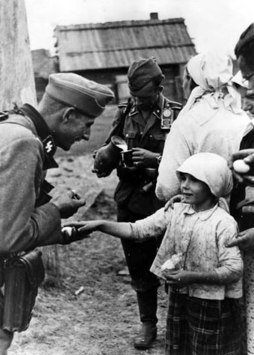

Запах весны

- Тамара Адамовна, вы 33-го года рождения, расскажите о детстве, молодости, все, что вспомните.
Родилась в деревне Пежевицы Волосовский район. Деревня была финнская. Все говорили по-финнски и владели русским. В деревне был один радиоприемник, о начале войны услышали от мужчин нашей деревни. Мужчины вернулись с финнской, те, что остались живы. Поначалу на войну с Германией их не брали.
Когда немцы приблизились и уже была слышна стрельба (в Коноховицах были бои долго) началось движение людей в лес. Эвакуировали только скот, директоров, агрономов в сторону Ленинграда. Простой народ оставался в деревнях.
Заняли нас немцы 16-го или 26-го августа. Решили укрываться в лесу: полдеревни в одну сторону, другие в эту.
У нас в лесу был хутор с сараем, мы туда. Там была яма и можно было пить чай под звуки снарядов. Сестрам было 16, 17 и 21 год. Всего нас было 7 человек. Детей, со мной, трое. С утра молодежь отправлялась в деревню, доили корову, приносили хлеб.
Там мы были две ночи. Когда немец занял, распределили лошадей - по одной на дом.
Из леса велели выходить, иначе будем стрелять. И мы вернулись домой.
Первых немцев, которые пришли мы окрестили "барские сыны". Они были либо на машинах, либо мотоциклах. Пехоты не видели. Запомнилось, что очень фотографировали. Началась жизнь при немцах.
На квартире у нас не жили. Мы были русские с фамилией Эльяс (эстонская). И еще таких пять домов в деревне, натурально Ивановы. Туда тоже не заселялись. В деревне все говорили по-финнски. Мы русский знали, потому, что мама русская. (Отец эстонец).
Первая волна прошла, немцев в деревне не было. Но комендатура была. Как мы пришли, избрали старосту. Был у нас Калкин дядя Матвей. Очень хороший был человек. Ни кого не расстреляли, ни кого не вешали, не было в нашей деревне Пежевицы, ни от кого жалоб. С приходом наших его посадили и больше не видели. Тогда по 25 лет давали.
Второй волной появились австрийцы. Они были на лошадях и в прямом смысле деревенские мужики. У нас квартировали три человека. Сестра Валя кончала семилетку и могла с ними объясняться. И я в 9 лет была уже переводчиком бабушкам.
И могла понять, чего они хотят: курицу, яйца, сметану...
В обмен они давали конфеты. В магазинах ничего не было.
Мама могла лечить заговорами. Не помню, что, но горло точно. Мастит у женщин, грыжу любую. От бабушки передалось. А меня не научила. Записывать она не позволяла.
Как только немец занял наш район, открылись школы: в Кальмусе, Пежевицах и Горках. Были Бедные Горки, теперь стали Красные Горки.
Осенью весь колхозный урожай убрали и распределили по едокам. Землю разделили, всем свои хутора вернули.
У нас партизан не было, никого не стреляли, не вешали. Но у Ивана Рудольфовича, моего мужа, в Тарасине, были случаи повешания тех у кого родственники в Красной армии. И, уже в 41-ом, семья приняла решение тайно уехать. Подготовились и уехали ночью, ни кому не сказав. Даже собаку в будке оставили, чтобы лаяла, хоть и очень переживали. За ночь добрались до Молосковиц и дальше в Эстонию (они эстонцами были).
В ноябре 43-го нас, насильно, не спрашивая, немец решил отвезти в свой тыл. Финнов в Финляндию, эстонцев в Эстонию, русских в Латвию. Мы в Эстонию. В деревне остались только работники железной дороги, их не перемещали.
Финны грузились на Вруде, эстонский эшелон в Кикерино.
Телячьи вагоны с насыпанным сеном. Разрешили многое взять с собой. У нас была корова, лошадь, корма, продукты. Везли долго, суток двое, но нас не разбомбили.
Выгрузили на станции Тапа. Там был лагерь - длинные бараки и колючая проволока кругом. Мы жили в бараке пока эстонцы отбирали себе работников. Мы не попали к хозяевам, потому, что были иждевенцы, трое считалось, а рабочих было только две старшие сестры.
Наконец нас взяли. Рядом была мыза Пыдрангу, а там сельскохозяйственное предприятие. Старших сестер и брата-подростка определили на работу в эту мызу. Комендантом той рабочей артели человек в 300 был австриец. Он был очень не за немцев.
Корову сразу немцы себе забрали, а лошадь мы обменяли. На мызе Пыдрангу было сильное хозяйство. Выращивали и зерно, и картофель, овощеводство было очень развито. Там впервые увидела кольраби.
Те из нас кто работал на мызе разместились в квартирах. Там были красивые двухэтажные дома. Голодно не было. Кроме того, что они зарплату продуктами получали, можно было подработать в выходные. Там настоящие выходные были. Они халтурили в свободное время у частников. Косьба, уборка картофеля, сушка сена, на такие работы нанимались. С ними очень хорошо рассчитывались и кормили в выходные. Возили в поле картошку - и мясо, картошку - и мясо. И потом кофе. И сладкое и молоко и белый хлеб делали. Сами пекли, все было очень достойно. Тогда голодно не было. А, вот когда в 41-ом урожай раздали, рожь посеяли (рожь на зиму сеят), овес и пшеницу мы не трогали, берегли на семена, так только щавель, грибы и ягоды. И когда в оккупацию отправились все осталось в домах.
В 44-ом, как только наши появились стали укомплектовывать эшелон для тех кто хочет вернуться. А хотели все, там все русские были.
Сестру 26-го года и брата 29-го года мобилизовали на строительство мостов в Мостострой, они с нами не вернулись.
Корову немцы нам отдали. Им скотину кормить было нечем и начался падеж. Мы эту корову с мамой три киллометра сутки вели: покормим - тихонько, покормим - тихонько. Это весной 44-го. И корова опять в поезд с нами.
Приехали в Волосово (октябрь-ноябрь). Ведем от туда корову (15 км), в свою деревню. Заходили с поля. Так, корова ходу прибавила и в свой дом.
Та корова на своем веку повидала и советскую жизнь, и путешествия в поезде, и оккупацию, и плен и бомбежки. У нее три соска оставалось, один осколком прострелен.
Но нас в дом не пустили. Там жила семья переселенцев с Нарвы. Хорошие, добрые люди. Дом был в порядке.
Место нам нашлось в Горках. Мы приехали богатыми: - и мука в мешках и зерно. Из того, что еще от сюда вывозили.
- Кто же таскал-кидал эти мешки?
- А на, что и были девки?! Это теперь нельзя три кило.
В 49-ом закончила семилетнюю школу и поехала в Ленинград поступать в музыкально-инструментальный техникум. Не получилось, заболела мама.
Уже осенью поехала в Выборг. Там годичная школа счетоводов-бухгалтеров. С 1 октября началась учеба и к лету 50-го закончила.
В Выборге было тревожно. Каждую ночь приходили финны говорили, мол, ничего, мы сюда еще вернемся.
Приехала домой. На комсомольский учет вставать не стала. Но не из-за того, что что-то имела против, просто считала ни к чему. А детям мы с Ваней желали и в комсомол и в партию, считали это дисциплинирует.
Меня тоже в партию уговаривали. Отказалась. Партийными у нас все пастухи были.
Семья мужа из Эстонии вернулась раньше нас, им поезда ждать было не надо. Запрягли лошадь и поехали. В Волосово им обьяснили, что от их Тарасино ничего не осталось и дали в райисполкоме направление в Тресковицы, тут были пустые дома. С приездом сюда они лошадь и всю упряжь, сбрую, телегу сдали в совхоз, а им дали разрешение на лес бесплатно. Они построились.
С 50-го года работала в колхозе счетоводом. В 54-ом вышла замуж. Жили своими хозяйствами: корову держали, поросенка два и у нас было много овец (12-13). Это было и до, и после, и во время войны. Немцы не любили баранину, им бы говядину и свинину.
- Бывало, что отбирали скот?
- Бывало, но мало. Однажды хотели поросенка забрать, так сестра не отдала. Вцепилась и не в какую. Немец уже стралять собрался. Не отдала.- Бывало, но мало. Однажды хотели поросенка забрать, так сестра не отдала. Вцепилась и не в какую. Немец уже стралять собрался. Не отдала.
После войны хлеба не было. Ходили покупать к Таллинскому поезду.
- А лодыри в деревне были?
- У нас никто не пил и все работали. А бездельники были, но немного.
Алкоголя не знали. А женщины совсем нет. Раз в году, на 7 ноября праздновали день урожая. Готовили всякие угощения, женщины варили какой-то слабоалкогольный напиток, типа пива, но не пиво. Келью по финнски. Самогонку совсем не помню.
- Поросенка чем кормили?
- Всем: трава, картошка, лен, всем.
- А где одежду брали?
- А, ходили в чем было. Магазинов не было. В Ленинграде, ведь, барахолка каждый день работала. А мы часто ездили торговать молоком, сметаной, творогом, яйцами, чем было. На деньги можно было купить. И налоги надо платить на все: на корову, на яблоню, за скотину, за землю, за все.
А в магазинах в Волосово было все. Денег не было.
- А, что больницы?
- Были больницы. В Рекково хорошая была. Там и терапия большая, и родильное. Валеру там родила.
А Сашу родила в районной, в Губаницах.
- Во Вруде больницы нет?
- Очень плохо стало, очень. Чтобы в больницу в Волосово попасть, сперва надо на Большую Вруду, в амбулаторию, там направление... Автобусы то, не ходят.
- А почему детей финскому-эстонскому не научили?
- А как их учить? Мы с Ваней с первого дня говорили только по-русски, и дети тоже.
- В семье ваших родителей восемь детей, а у вас два. Почему?
- Не знаю, что сказать, но не из-за того, что не прокормить было. В моем поколении у всех было так: - один, двое, трое.
Спасибо, Тамара Адамовна. Было очень познавательно.